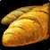
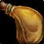

Leveling 1-60
Tap a level to open it. Check it off and it collapses. Levels 1-30 match the beta; 31-60 is mostly unannounced.


- New
 Devotion Aura
Devotion Aura - New
 Holy Light
Holy Light - New
 Seal of Righteousness
Seal of Righteousness
- Start in Northshire Abbey, Elwynn Forest. Seal of Righteousness + auto-attack.
- New
 Blessing of Might
Blessing of Might - New
 Judgement
Judgement
- Pick up Mining at a trainer; Blacksmithing in Goldshire/Stormwind. Cooking + First Aid too.
- New
 Divine Protection
Divine Protection - New
 Holy Strike New in Forever
Holy Strike New in Forever - New
 Seal of the Crusader
Seal of the Crusader - R2 Holy Light
- Holy Strike unlocked — press it on cooldown when you have mana. [Icy Veins]
- New
 Hammer of Justice
Hammer of Justice - New
 Purify
Purify
- New
 Blessing of Protection
Blessing of Protection - New
 Lay on Hands
Lay on Hands - New
 Seal of Fury New in Forever
Seal of Fury New in Forever - R2 Devotion Aura
- R2 Seal of Righteousness
- Talents open. Head toward Westfall / Loch Modan.
- Equip the slowest two-hander you can find (sword ideal).
- New
 Redemption
Redemption - R2 Blessing of Might
- R2 Holy Strike New in Forever
- R2 Seal of the Crusader
- New
 Blessing of Wisdom
Blessing of Wisdom - R3 Holy Light
- New
 Retribution Aura
Retribution Aura - New
 Righteous Fury
Righteous Fury
- New
 Blessing of Freedom
Blessing of Freedom - R3 Seal of Righteousness
- R2 Divine Protection
- R2 Seal of Fury New in Forever
- New
 Blessing of Kings
Blessing of Kings - New
 Consecration
Consecration - New
 Exorcism
Exorcism - New
 Flash of Light
Flash of Light - New
 Sense Undead
Sense Undead - New
 Seal of Command talent spell
Seal of Command talent spell - New
 Voice of Truth New in Forever talent spell
Voice of Truth New in Forever talent spell - R3 Devotion Aura
- R3 Holy Strike New in Forever
- Consecration — your first AoE. Mana-hungry: 2-3 mobs max solo. [Icy Veins]
- Seal of Command talent — swap from SoR if your 2H is slow.
- New
 Divine Favor talent spell
Divine Favor talent spell - New
 Swift Judgement New in Forever talent spell
Swift Judgement New in Forever talent spell - R3 Seal of Fury New in Forever
- New
 Shadow Resistance Aura
Shadow Resistance Aura - R4 Holy Strike New in Forever
- R2 Exorcism
- New
 Divine Intervention
Divine Intervention - New
 Seal of Light
Seal of Light - New
 Holy Shock talent spell
Holy Shock talent spell - New
 Repentance talent spell
Repentance talent spell - New Templar's Bulwark New in Forever talent spell
- R4 Devotion Aura
- R5 Holy Light
- R2 Lay on Hands
- R2 Consecration
- R2 Seal of Command needs talent
- Beta cap. Check Merchant's Favor Blacksmithing recipes (Crusader's set). [Icy Veins]
- Shockadin (Holy Shock) build becomes possible — not our plan.
- New
 Divine Shield
Divine Shield - R5 Seal of Righteousness
- R4 Seal of Fury New in Forever
- R3 Blessing of Wisdom
- R3 Flash of Light
- New
 Fire Resistance Aura
Fire Resistance Aura - R5 Holy Strike New in Forever
- R3 Redemption
- R3 Retribution Aura
- R3 Exorcism
- New
 Blessing of Light
Blessing of Light - New
 Hammer of the Righteous New in Forever
Hammer of the Righteous New in Forever - New
 Summon Warhorse (Human, Dwarf)
Summon Warhorse (Human, Dwarf) - New Summon Warhorse New in Forever
- New
 Holy Shield talent spell
Holy Shield talent spell - New Light's Vigil New in Forever talent spell
- R5 Devotion Aura
- R3 Hammer of Justice
- R3 Consecration
- R3 Seal of Command needs talent
- R2 Shadow Resistance Aura
- R2 Holy Shock needs talent
- R2 Seal of Light
- Dual Specialization reportedly opens (Ret + Prot). See Prot tab. [unconfirmed cost]
- New
 Cleanse
Cleanse - R6 Seal of Righteousness
- R5 Blessing of Might
- R5 Seal of the Crusader
- R5 Seal of Fury New in Forever
- R4 Flash of Light
- New
 Hammer of Wrath
Hammer of Wrath - R6 Holy Strike New in Forever
- R4 Blessing of Wisdom
- R4 Exorcism
- R2
 Frost Resistance Aura
Frost Resistance Aura
- R4 Redemption
- R3 Holy Shock needs talent
- R2 Fire Resistance Aura
- R2
 Seal of Wisdom
Seal of Wisdom
- New
 Holy Wrath
Holy Wrath - R6 Devotion Aura
- R7 Seal of Righteousness
- R3 Lay on Hands
- R6 Seal of Fury New in Forever
- R4 Consecration
- R5 Flash of Light
- R4 Seal of Command needs talent
- R3 Seal of Light
- R2 Divine Shield
- R2 Blessing of Light
- R2 Holy Shield needs talent
- R2 Light's Vigil New in Forever needs talent
- New
 Greater Blessing of Might
Greater Blessing of Might - R6 Blessing of Might
- R7 Holy Strike New in Forever
- R6 Seal of the Crusader
- R5 Exorcism
- R3
 Turn Undead
Turn Undead - R3 Shadow Resistance Aura
- R2 Hammer of Wrath
- New
 Greater Blessing of Wisdom
Greater Blessing of Wisdom - R8 Holy Light
- R4 Hammer of Justice
- R5 Blessing of Wisdom
- R2
 Blessing of Sacrifice
Blessing of Sacrifice
- R5 Retribution Aura
- R4 Holy Shock needs talent
- R3 Frost Resistance Aura
- R8 Seal of Righteousness
- R7 Seal of Fury New in Forever
- R6 Flash of Light
- R3 Seal of Wisdom
- New
 Greater Blessing of Kings
Greater Blessing of Kings - New
 Greater Blessing of Light
Greater Blessing of Light - New Greater Blessing of Salvation
- New
 Summon Charger
Summon Charger - R7 Devotion Aura
- R9 Holy Light
- R7 Blessing of Might
- R8 Holy Strike New in Forever
- R5 Redemption
- R6 Blessing of Wisdom
- R5 Consecration
- R6 Exorcism
- R5 Seal of Command needs talent
- R4 Seal of Light
- R3 Fire Resistance Aura
- R3 Blessing of Light
- R3 Holy Shield needs talent
- R3 Light's Vigil New in Forever needs talent
- R3 Hammer of Wrath
- R2 Holy Wrath
- R2 Greater Blessing of Might
- R2 Greater Blessing of Wisdom
- Max level. Endgame gear/talents not published yet.
Retribution
Talents to 30
Talent names match the Icy Veins "Retribution Focused" build ( Benediction,
Benediction,  Sanctified Judgement,
Sanctified Judgement,  Pursuit of Justice,
Pursuit of Justice,  Sacred Arbiter,
Sacred Arbiter,  Seal of Command,
Seal of Command,  Vengeance). Icy Veins also highlights
Vengeance). Icy Veins also highlights  Holy Conduit and
Holy Conduit and  Improved Judgement, which aren't in this plan. Icy Veins doesn't print a level-by-level order, so double-check it in their calculator. Icy Veins
Improved Judgement, which aren't in this plan. Icy Veins doesn't print a level-by-level order, so double-check it in their calculator. Icy Veins
Rotation
- Always keep a Seal up. Before 20: Seal of Righteousness. 20+: Seal of Command with a slow two-hander and no on-hit effect. SoR is still better with high Spell Power, a fast weapon, or "Strike of the Hydra" gear.
- Judgement on cooldown. It does not use up your Seal in Forever.
- Holy Strike on cooldown (from level 6).
- Long fights: Seal of the Crusader, then Judgement (debuff), then switch back to SoR/SoC.
- With SoC: Hammer of Justice stun, then Judgement for burst.
- Exorcism on Undead and Demons.
- Consecration (20+) for groups of up to about 4. It costs a lot of mana.
Buffs:  Blessing of Might or Kings on yourself, plus
Blessing of Might or Kings on yourself, plus  Retribution Aura.
Retribution Aura.
Source: Icy Veins Ret. Blessing duration: 60 min in Forever (from earlier research, not on the Icy Veins page).
Staying alive solo
- Mana is extra health. Holy Light yourself and keep going instead of sitting to eat (Icy Veins).
- No AoE before 20, so pull one mob at a time.
- Emergencies: Divine Protection, Lay on Hands, Hammer of Justice. Human Will to Survive breaks stuns.
- Bandages and potions for when you're out of mana.
Helping strangers
- Blessings: Might for melee, Wisdom for casters, Kings if you're not sure.
- Heals: Holy Light on anyone who's struggling.
- Blessing of Protection: makes a caster or healer immune to physical damage, but they can't attack while it's on.
- Blessing of Freedom: breaks roots and slows.
- Purify: removes poison and disease.
- Lay on Hands: full heal, uses all your mana.
- Redemption: brings back dead players out of combat.
Source: Icy Veins Prot utility section.
Gear & Stats
Stat priority (Icy Veins, beta Lv30)
- Weapon DPS: your #1 upgrade. Slow is a bit better for Holy Strike.
- Hit / Expertise (rare before 30)
- Crit
- Spell Power: scales Judgement, Holy Strike, Consecration
- Strength
- Intellect
- Agility (fine if it's there, don't chase it)
- Stamina
- Spirit
Items with both Strength and Spell Power beat items with only one. Greens "of  Holy Wrath" can be great.
Holy Wrath" can be great.
This is different from the earlier shorthand (Str > Crit > Stam > Int, skip Agi/Spirit). On Icy Veins, Spell Power ranks above Strength and Stamina sits low. Stamina still keeps you safer solo. Icy Veins
Weapon
Two-hander. A sword gets Human Sword Specialization (+2% crit). Maces and axes are fine if they hit harder.
Level-30 options: Manual Crowd Pummeler (Gnomeregan), Strike of the Hydra (BFD, Aku'mai), Boneslicer (Stockades, Dextren Ward), Corpsemaker (RFK, Overlord Ramtusk), Rock Pulverizer (Badlands, Alliance quest).
Blacksmithing pieces (Merchant's Favor recipes)
- Crusader's Chain Helm
- Crusader's Silvered Chain Shirt
- Justicar's Belt / Crusader's Chain Belt
- Crusader's Silvered Chain Leggings
- Crusader's Boots
Also: Cloak of the Divine Storm (Alliance Paladin quest chain), Libram: Tenets of the Silver Hand (Enchanting).
Source: Icy Veins Lv30 gear table. Exact recipe levels (20 vs 30) aren't listed.
Professions
 Mining +
Mining +  Blacksmithing ✔
Blacksmithing ✔
Icy Veins' top leveling combo for Ret. You craft your own mail and weapons, and Forever's Merchant's Favor recipes are some of the best gear at 30.
Bonus: sharpening stones and weightstones for your weapon.
Secondary
- Cooking: Well Fed buff food gives stats and +5% XP from kills in Forever. Cooking also makes Campfires.
- First Aid: bandages, and in Forever it can make healing potions. It also adds a Stamina First Aid Kit to Campfires.
Protection (alt spec)
Dual spec
Level 40, bought from your class trainer in a capital city. Several sites cite Blizzard's 30 Sep class deep dive for this.
Cost isn't confirmed. One site says 50g, but Blizzard hasn't given a price. The beta caps at 30, so nobody has tested it yet.
Prep before 40 (bank it)
How to tank
- Righteous Fury up at all times (threat).
- Seal of Fury: when you Judge with it, it taunts for 4 seconds. That's new in Forever.
- Consecration for AoE threat, when your mana allows.
- Save Judgement for taunting back mobs that get loose.
- Holy Strike on cooldown. Exorcism on Undead and Demons.
Talents (Lv30 plan):  Redoubt,
Redoubt,  Precision,
Precision,  Anticipation,
Anticipation,  Shield Specialization,
Shield Specialization,  Improved Seal of Fury, then
Improved Seal of Fury, then  Holy Conduit in Ret.
Holy Conduit in Ret.
Stats: Spell Power > Hit > Stamina > Defense > Armor > Block > Int > Str > Agi.
Source: Icy Veins Prot. Note that Icy Veins picks Dwarf for Prot (Stoneform), but Human works.
My Bars · Lv
Change the level in the top bar. Gold outline = new at this level. Dashed = placement for 31-60 not confirmed.
Bow & Buff macro (Top 5, from Lv 4)
#showtooltip Blessing of Might /cast Blessing of Might /bow
Make it in-game with /macro, then New. Character macros hold 255 characters, and this one is far under. That limit is from standard WoW and wasn't checked against Forever.
Learn levels from The Forever Era beta client data.  Seal of Command needs the talent (taken at 20 in your plan). Spells after 30 can't be tested in the beta.
Seal of Command needs the talent (taken at 20 in your plan). Spells after 30 can't be tested in the beta.
Back from a break
30-second rotation
- Seal up (SoR before 20, SoC with a slow 2H).
- Judgement on CD (keeps your seal).
- Holy Strike on CD.
- Consecration if 3+ mobs.
- Low health: Holy Light. Panic: Divine Protection, then Lay on Hands.
- Buffs: Might/Kings + Ret Aura.
Bag check
Notes
 My Character
My Character
Credits
Spell, item, class, race and zone icons © Blizzard Entertainment, downloaded once from Wowhead's public icon CDN (wow.zamimg.com) and bundled in this app. Icon choices and spell/talent links: The Forever Era. Personal, non-commercial fan page; not affiliated with Blizzard.